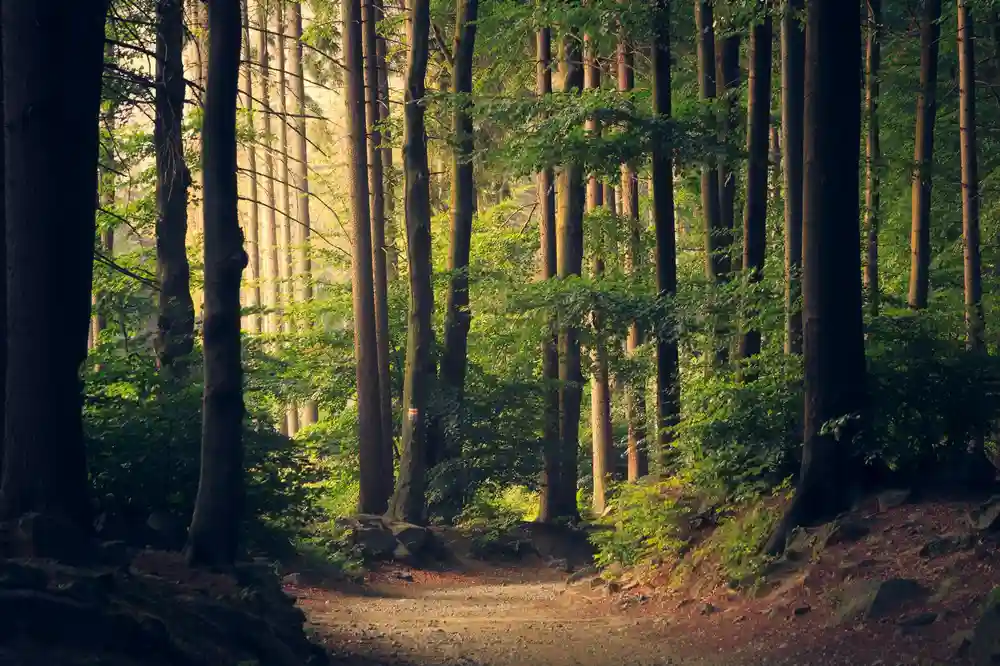

This path isn't on our map.
The page you were looking for has moved, changed, or was never here. Nothing broken — just a wrong turn. Head back home, or return to where you were.
Stackly · Eco Tourism

The page you were looking for has moved, changed, or was never here. Nothing broken — just a wrong turn. Head back home, or return to where you were.
Stackly · Eco Tourism